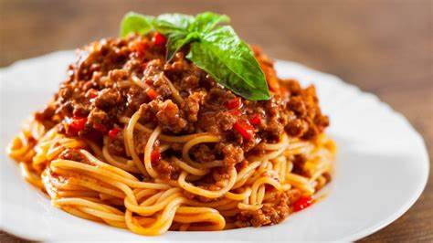

Yemek Tarifim
Ana Sayfa
Tarifler
İtalyan Usulü Bolognese Soslu Makarna

Malzemeler
250 gram spagetti makarna
2 yemek kaşığı zeytinyağı
1 adet soğan (doğranmış)
2 diş sarımsak (ezilmiş)
300 gram kıyma (tercihen dana)
1 adet havuç (rendelenmiş)
1/2 su bardağı kırmızı şarap (isteğe bağlı)
1 kutu (400 gram) domates püresi
1 yemek kaşığı domates salçası
1/2 su bardağı süt
Tuz ve karabiber
Bir tutam kekik ve fesleğen (isteğe bağlı)
Rendelenmiş parmesan peyniri (süsleme için)
Yapılışı
Büyük bir tencerede suyu kaynatın. Kaynayan suya bolca tuz ekleyin ve spagettiyi haşlayın (8-10 dakika).
Makarnayı süzün, ancak bir miktar makarna suyunu ayırın.
Bir tavada zeytinyağını ısıtın, doğranmış soğanı ekleyin ve soğanlar yumuşayana kadar kavurun.
Sarımsağı ekleyin ve kokusu çıkana kadar birkaç dakika soteleyin.
Kıymayı ekleyin ve tamamen pişene kadar kavurun.
Rendelenmiş havucu ekleyin ve 3-4 dakika daha pişirin.
Şarap ekleyin ve alkolü buharlaşana kadar karıştırın (isteğe bağlı).
Domates püresini, salçayı ve sütü ekleyin, karıştırın ve sosu kısık ateşte 20-25 dakika pişirin.
Sosun kıvamını kontrol edin, gerekirse biraz makarna suyu ekleyebilirsiniz. Tuz, karabiber ve baharatlarla tatlandırın.
Haşlanmış spagettiyi sosun içine ekleyin ve iyice karıştırın.
Sıcak servis yapın, üzerine parmesan peyniri serpin ve taze fesleğenle süsleyin.
Afiyet Olsun!
İtalyan usulü bolognese soslu makarnanız hazır! Yanında bir dilim ekmekle servis edebilirsiniz.